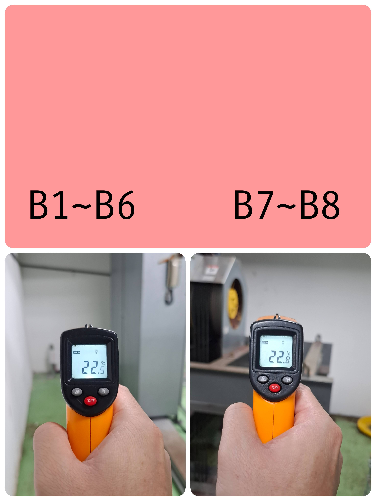
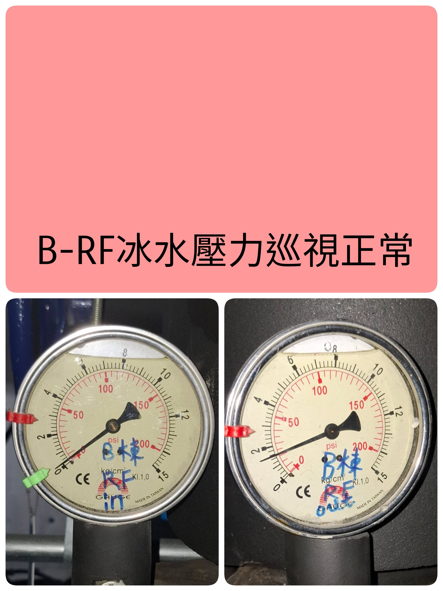
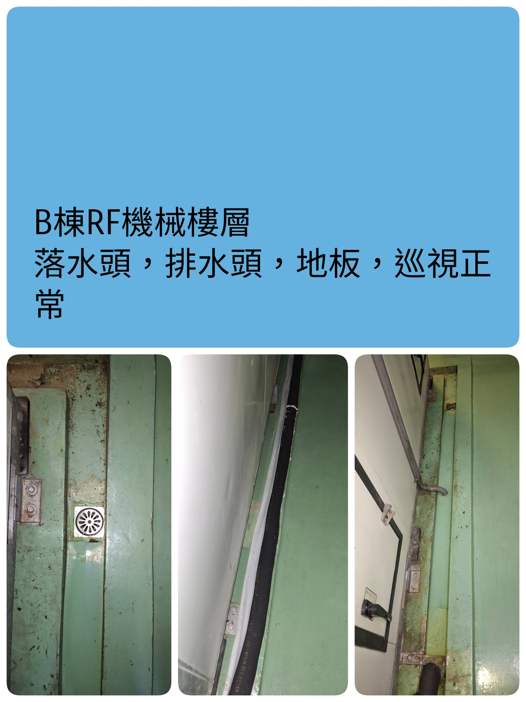
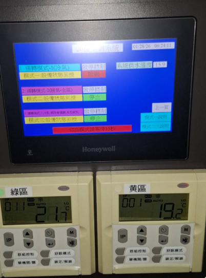
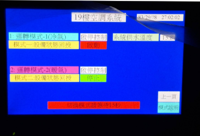

RF 樓層
B1-6 B7-8 電梯機房溫度
拍照紀錄現況並組圖傳送：4空調技研團。

B1-6 B7-8 溫度紀錄範例
「B1~B6 B7~B8」
B-RF 冰水壓力巡視正常
拍照紀錄現況並組圖傳送：4空調技研團。

B-RF 冰水壓力範例
「B-RF冰水壓力巡視正常」
B 冰水壓力巡視
抄表任務
僅需記錄數值於表格中，不用拍照。
B棟 RF 落水頭/排水頭/地板
拍照紀錄現況並組圖傳送：大群組。

RF 落水頭/地板範例
「B棟RF落水頭，排水頭，地板，巡視正常」
20樓
櫃檯後方面板顯示
拍照紀錄：面板顯示正常。

面板顯示範例
20F 環境溫度
抄表任務
抄表項目：梯廳、櫃台、C廳、A廳、B廳、走道。
注意：如 A、B、C 廳有使用，須拍照 (3張組圖) 上傳「大群」。(點擊開啟範例)
19樓
櫃檯後方面板顯示
拍照紀錄：面板顯示正常。

面板顯示範例
19F 環境溫度
抄表任務
抄表項目：(待補充)。
注意：如 A、B、C 廳有使用，須拍照 (3張組圖) 上傳「大群」。(點擊開啟範例)
17樓
17樓 巡檢項目內容...
16樓
16樓 巡檢項目內容...
空橋
空橋 巡檢項目內容...